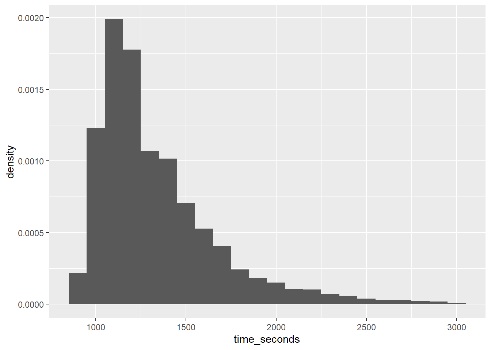
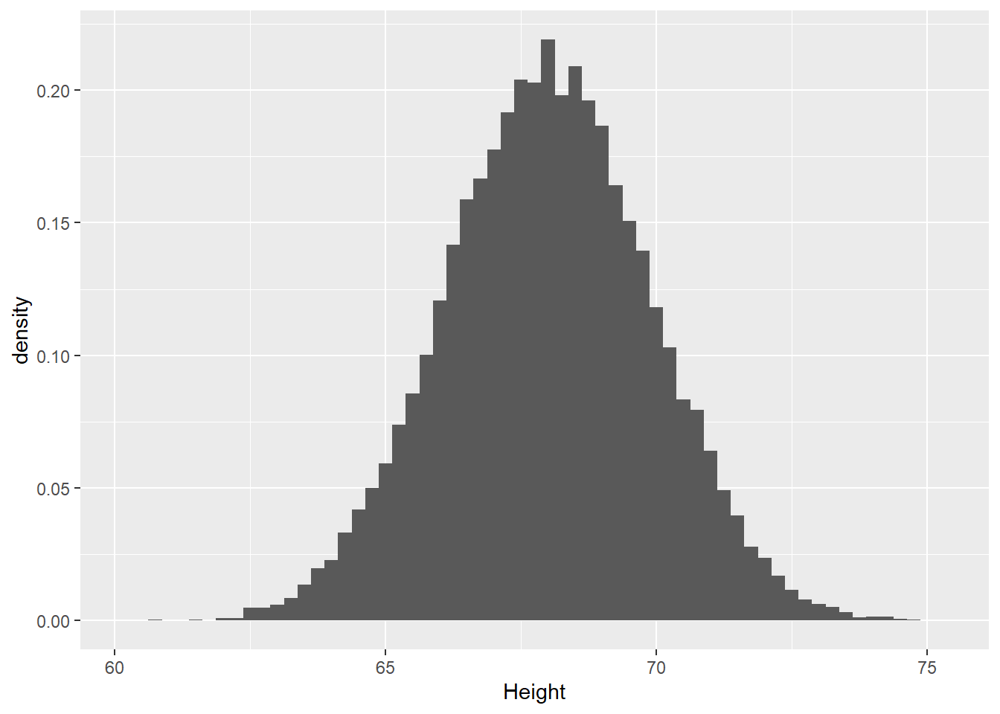

Read through the following document, running each code chunk (and editing variables within them) as you encounter them. Use the results of the code chunks to answer the questions.
To submit your work: 1. Render the file by clicking the blue segmented arrow at the top of this window to render to a .html
2. Submit the resulting “Chapter 6 Stats Lab.html” and “Chapter 6 Stats Lab_files” folder to the Google drive folder I shared.
Background: Part 1
In this Lab, we will work on analyzing a provided dataset and concluding whether it seems to follow a normal distribution. To accomplish this, we will compare the empirical data to the theoretical distribution to determine if data from the experiment fits.
The first data set, M64_16S.csv is data acquired from the leaderboard of Speedrun.com on completion times for the game “Super Mario 64”.
Question 1.1
Before we start, would you expect the completion times to be normally distributed?
Answer:
Getting Started
Ensure M64_16S.csv is in the same folder as this notebook.
── Attaching core tidyverse packages ──────────────────────── tidyverse 2.0.0 ──
✔ dplyr 1.1.4 ✔ readr 2.1.5
✔ forcats 1.0.0 ✔ stringr 1.5.1
✔ ggplot2 3.5.1 ✔ tibble 3.2.1
✔ lubridate 1.9.4 ✔ tidyr 1.3.1
✔ purrr 1.0.2
── Conflicts ────────────────────────────────────────── tidyverse_conflicts() ──
✖ dplyr::filter() masks stats::filter()
✖ dplyr::lag() masks stats::lag()
ℹ Use the conflicted package (<http://conflicted.r-lib.org/>) to force all conflicts to become errors
library(readr)library(ggplot2)library(dplyr)# Read dataset (assumes it's in the same directory as the .qmd file)data <-read_csv("M64_16S.csv", show_col_types =FALSE)# Preview the first few rowshead(data)
Before starting any analysis, it is a good idea to explore the data.
First, we’ll construct a histogram of completion times:
# Creates histogram of time_seconds (completion time) and changes the y-axis to be density (makes area under bars add to 1)gg_hist <- data %>%ggplot(aes(x = time_seconds)) +geom_histogram(aes(y =after_stat(density)), binwidth =100) # Bin width chosen to be 100sgg_hist # display resulting plot

Question 1.2
Does the data appear normally distributed?
Answer:
Summary Statistics
We can next look at the summary statistics:
data$time_seconds %>%summary()
Min. 1st Qu. Median Mean 3rd Qu. Max.
875.5 1107.0 1233.0 1337.6 1475.0 2972.0
Question 1.3
From the summary above, what is the mean completion time? What is the range of completion times?
Answer:
Question 1.4
Using the code block below, what is the standard deviation?
data$time_seconds %>%sd()
[1] 339.306
Answer:
Question 1.5
Using the mean and standard deviation, what is the approximate normal distribution?
Answer: \(X \sim N(___,___)\)
Describe the data
Empirical distribution (from the data)
What is the interquartile range? (Recall IQR = Q3 - Q1)
The 15th percentile is
The 85th percentile is
The median is
What is the theoretical probability that a randomly chosen completion time is less than 1000s?
# number of times less than 1000less_1000 <-sum(data$time_seconds <1000)# total trialstotal <-length(data$time_seconds)# Probability of less than 1000?# Recall probability of event occurring is (# of desired outcomes)/(# of total outcomes)############ Fill in probability calculation here###########
Theoretical Distribution
Use the normal distribution with mean and standard deviation to answer the following:
What is the interquartile range?
The 15th percentile:
The 85th percentile:
Mean is:
What is the theoretical probability that a randomly chosen completion time is less than 1000s?
# Probability of less than 1000?q <-0# CHANGE ME!!mean <-0# CHANGE ME!!sd <-1# CHANGE ME!!pnorm(q, mean, sd)
[1] 0.5
Conclusion
Note
Based on the prior analysis, do you think that the theory that the data is normally distributed holds up? Compare the calculated mean, 15/85th percentiles, probability calculation between the empirical data and theoretical distribution.
Answer:
As a final look, consider the histogram from earlier with the normal distribution we analyzed on top:
In this Lab, we will work on analyzing a provided dataset and concluding whether it seems to follow a normal distribution. To accomplish this, we will compare the empirical data to the theoretical distribution to determine if data from the experiment fits.
The first data set, SOCR-HeightWeight.csv is data acquired from Kaggle, a website that hosts data science competitions. This is a simple dataset. It contains only the height (inches) and weights (pounds) of 25,000 different humans of 18 years of age.
Question 2.1
Before we start, would you expect the height to be normally distributed?
Answer:
Getting Started
Ensure SOCR-HeightWeight.csv is in the same folder as this notebook.
Run the following code to load the dataset:
# Load necessary librarieslibrary(readr)library(ggplot2)library(dplyr)# Read dataset (assumes it's in the same directory as the .qmd file)data2 <-read_csv("SOCR-HeightWeight.csv",show_col_types =FALSE) %>%select("Index", "Height"="Height(Inches)")# Preview the first few rowshead(data2)
Before starting any analysis, it is a good idea to explore the data.
First, we’ll construct a histogram of completion times:
# Creates histogram of time_seconds (completion time) and changes the y-axis to be density (makes area under bars add to 1)gg_hist2 <- data2 %>%ggplot(aes(x = Height)) +geom_histogram(aes(y =after_stat(density)), binwidth = .25) # Bin width chosen to be .25ingg_hist2 # display resulting plot

Question 2.2
Does the data appear normally distributed?
Answer:
Summary Statistics
We can next look at the summary statistics:
data2$Height %>%summary()
Min. 1st Qu. Median Mean 3rd Qu. Max.
60.28 66.70 68.00 67.99 69.27 75.15
Question 2.3
From the summary above what is the mean height? What is the range of heights?
Answer:
Question 2.4
What is the standard deviation?
data2$Height %>%sd()
[1] 1.901679
Answer:
Question 2.5
Using the mean and standard deviation, what is the approximate normal distribution?
Answer: \(X \sim N(___,___)\)
Describe the data
Empirical distribution (from the data)
What is the interquartile range? (Recall IQR = Q3 - Q1)
The 15th percentile is
The 85th percentile is
The median is
What is the theoretical probability that a randomly chosen height is less than 6 feet (72 inches)?
# number of times less than 72less_72 <-sum(data2$Height <72)# total trialstotal <-length(data2$Height)# Probability of less than 72?# Recall probability of event occurring is (# of desired outcomes)/(# of total outcomes)############ Fill in probability calculation here###########
Theoretical Distribution
Use the normal distribution with mean and standard deviation to answer the following:
What is the interquartile range?
The 15th percentile:
The 85th percentile:
Mean is:
What is the theoretical probability that a randomly chosen completion time is less than 72?
# Probability of less than 72?q <-0# CHANGE ME!!mean <-0# CHANGE ME!!sd <-1# CHANGE ME!!pnorm(q, mean, sd)
[1] 0.5
Conclusion
Note
Based on the prior analysis, do you think that the theory that the data is normally distributed holds up? Compare the calculated mean, 15/85th percentiles, probability calculation between the empirical data and theoretical distribution.
Answer:
As a final look, consider the histogram from earlier with the normal distribution we analyzed overlayed: